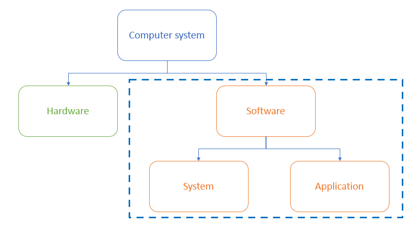
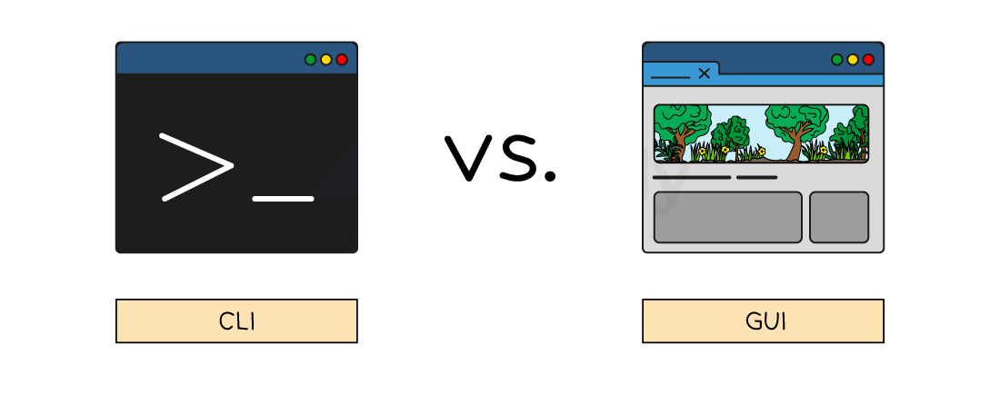
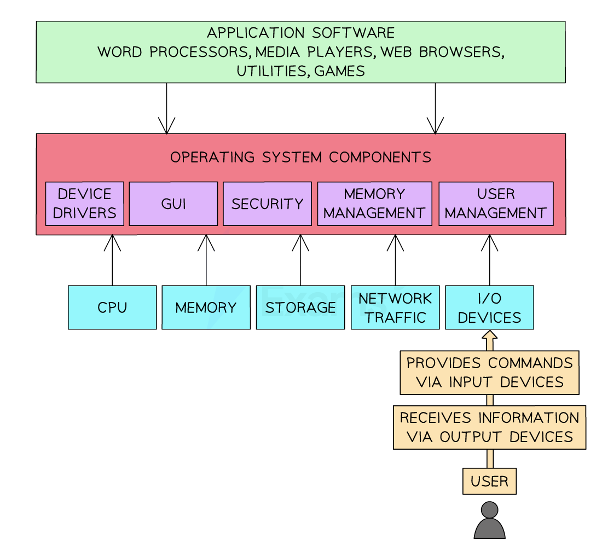
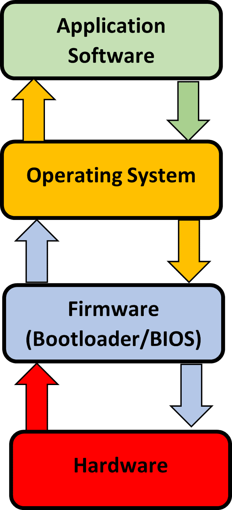

System Software & Application Software
- Software can be broken down in to two categories, system and application software
Cambridge IGCSE 0478 expects you to distinguish clearly between system and application software. This revision note uses only the categories and terms examiners reward, no off-spec extras.

What is system software?
- System software is software essential for the operation of the computer system
- It gives users a platform to run applications and carry out tasks
- Examples of system software include:
- The operating system
- Utility software
Utility software
- Utility software is software designed to help maintain, enhance and troubleshoot/repair a computer system
- Designed to perform a limited number of tasks
- Interacts with the computers hardware, for example, secondary storage devices
- Some utility software comes installed with the operating system
- Examples of utility software and their function are:
- Defragmentation (maintain)
- Compression (enhance)
- Encryption (enhance)
- Task manager (troubleshoot/repair)
For 2-mark questions on software types, give the category (e.g. utility software) and a matching function (e.g. defragmentation to maintain disk performance). That’s how you hit both marks.
What is application software?
- Application software (abbreviated ‘apps’) is software chosen by a user to help them carry out a specific task
- Installed on top of system software and is user-chosen to best suit individual requirements
- Common categories of application software include:
- Productivity - get things done efficiently (word processors, spreadsheets & presentation)
- Communication - stay connected (email, browser, messaging)
- Entertainment - Watch movies, play games or listen to music
Marks aren’t given for brand names like “Microsoft Word” or “Google Chrome.” Always use generic software types like word processor, browser, or email client, that’s what examiners look for.
The Purpose & Functionality of Operating Systems
What is an operating system?
Cambridge IGCSE 0478 expects you to describe the functions of an operating system*, with clear examples. This page follows the structure used in past paper questions and mark schemes, so you’re only learning what gets you marks.*
- An operating system (OS) is software that manages computer hardware and provides a platform for running applications
- It provides an interface between the user and the hardware in a computer system
- It hides the complexities of the hardware from the user, for example:
- A user does not need to know ‘where’ on secondary storage data is kept, just that it is saved for when they want it again
- An operating systems main functions can be divided in to eight key areas
In the exam, you’re often asked to name and describe two functions of an OS. Don’t waffle. Say what the OS does and why, for example:
“Memory management [1] allocates RAM between programs so they run efficiently [1].”
File Management
What is file management?
- File management is a process carried out by the operating system creating, organising, manipulating and accessing files and folders on a computer system
- The OS manages where data is stored in both primary and secondary storage
- File management gives the user the ability to:
- Create files/folders
- Name files/folders
- Rename files/folders
- Copy files/folders
- Move files/folders
- Delete files/folders
- The OS allows users to control who can access, modify and delete files/folders (permissions)
- The OS provides a search facility to find specific files based on various criteria
Handling Interrupts
What is interrupt handling?
- Interrupt events require the immediate attention of the central processing unit
- In order to maintain the smooth running of the system, interrupts need to be handled and processed in a timely manner
- For example, if a user clicks cancel on a file conversion process, a signal is sent from the mouse, interrupts the processor, and the operating system will trigger the cancellation routine
User Interface
What is a user interface?
- A user interface is how the user interacts with the operating system
- Examples of user interfaces include:
- Command Line Interface (CLI)
- Graphical User Interface (GUI)
- Menu
- Natural language (NLI)

What is a command line interface?
- A Command Line Interface (CLI) requires users to interact with the operating system using text based commands
- CLIs are more commonly used by advanced users
- Examples of CLIs are MSDOS (Microsoft Disk Operating System) and Raspbian (for Raspberry Pi)
What is a graphical user interface?
- A Graphical User Interface (GUI) requires users to interact with the operating system using visual elements such as windows, icons, menus & pointers (WIMP)
- GUIs are optimised for mouse and touch gesture input
- Examples of GUIs are Windows, Android and MAC OS
- A menu interface is successive menus presented to a user with a single option at each stage
- Often performed with buttons or a keypad
- Examples include
- Chip and pin machines
- Vending machines
- Entertainment streaming services
What is a natural language interface?
- A natural language interface (NLI) uses the spoken word to respond to spoken or textual inputs from a user
- Examples include
- Virtual assistants - Amazon Alexa, Google Assistant, Siri
- Search engines
- Smart home devices
Advantages and disadvantages of user interfaces
| Interface | Advantages | Disadvantages |
|---|---|---|
| Command line (CLI) | •Uses less system resources • Useful for automation of tasks • Commands are often faster to type than navigating menus |
• Requires users to remember commands • Typing errors are common • Less intuitive than GUI |
| Graphical (GUI) | • Intuitive and user-friendly • Requires no previous knowledge to use • Information is visual, making it easier to understand |
• Uses more system resources • Can be slower to find and execute commands • Can be frustrating when doing repetitive tasks |
| Menu | • Simplicity • Efficiency |
• Limited flexibility • Accessibility issues |
| Natural language (NLI) | • Can be used by people with disabilities • Intuitive |
• Not always reliable • Privacy concerns |
Peripheral Management & Device Drivers
What is peripheral management?
- Peripheral management is a process carried out by the operating system managing the way peripherals (hardware) interact with software
- The OS allocates system resources to peripherals to ensure efficient operation
- Peripheral management makes plug-and-play (PnP) functionality possible, automatically detecting and configuring new peripherals without the need for manually installing device drivers or power cycling the system
What is a device driver?
- A device driver is a piece of software used to control a piece of hardware
- Peripherals require device drivers in order to be used by the operating system
- The OS has generic device drivers built in which makes basic compatibility possible and enables plug-and-play (PnP)
- In order for hardware to be used to its maximum capacity, often a separate device driver must be downloaded from the manufacturer
- Device drivers are OS specific and are regularly updated
Memory Management & Multitasking
What is memory management?
- Memory management is a process carried out by the operating system allocating main memory (RAM) between different programs that are open at the same time
- The OS is responsible for copying programs and data from secondary to primary storage as it is needed
- Programs and data require different amounts of RAM to operate efficiently and the OS manages this process
- RAM is allocated based on priority and fairness, for example, system applications (essential) may have a higher priority than user applications
- The OS dynamically manages the memory, adjusting allocation as needed to maintain optimal system performance
- Memory management makes multitasking possible
What is multitasking?
- Multitasking is a process made possible by the OS simultaneously managing system resources (memory, CPU etc) to give a user the perception of being able to use multiple programs at the same time
- The OS splits tasks and allocates system resources based on a priority
- The CPU can only execute one instruction at a time, it can can execute billions of them in one second.
- This makes it appear that multiple programs are running at the same time
Just naming functions (e.g. “File management, memory management…”) won’t earn full marks. You must explain each one using exam-friendly language like “allocates,” “controls,” or “manages.”
Providing a Platform for Running Applications
- Operating systems provide a platform on which application software can run, this is mainly by allowing software access to system resources
- For example, if a computer game has intensive graphics and online play, the operating system will grant it access to the GPU and the network card

Organisation of application layer, operating system components, and input/output
Providing System Security
What is system security?
- Operating systems provide various security features such as password-protected system accounts, a firewall, virus scanning and file encryption
- Password-protected system accounts are a very common feature in operating systems
- System accounts can also be restricted from performing certain actions, e.g. editing network settings, installing unapproved software, changing the account settings of other users
User Management
What is user management?
- User management is a process carried out by the operating system enabling different users to log onto a computer
- The OS is able to maintain settings for individual users, such as desktop backgrounds, icons and colour schemes
- A system administrator is able to allocate different access rights for different users on a network
Ella uses her computer to create artwork for a magazine
Ella makes use of system software.
One type of system software is the operating system.
Identify and describe two functions of an operating system [6]
How to answer this question
- Break down the 6 marks, 1 mark each for identifying a function of the operating system. For each function you need to make 2 points about how they work
Answer
- Memory management
- File management
Hardware, Firmware & the Operating System
How does application software, the operating system and hardware communicate?
Cambridge IGCSE 0478 expects you to explain how application software*, the* operating system*, and* hardware interact, and describe the role of firmware during startup. This page is focused only on what’s required for the exam—nothing extra.
- Application software talks to the operating system, this allows it to interact with the hardware
- The hardware processes and sends the information to the operating system which talks directly to the applications software
- This process is repeated while application software is in use

Always describe the communication flow as:
Application software → Operating System → Hardware.
The OS acts as a bridge. Saying software “talks to hardware” without the OS in between will lose you marks.
What is firmware?
- Firmware is embedded directly in to the hardware of a device, to make them function
- When a computer is turned on, it has to explore the ROM for its initial boot-up instructions, these are contained in a Bootstrap loader
- The initial process is handled by the basic input/output system (BIOS) which is known as firmware
- Once start-up is complete, instructions are sent to RAM to be processed by the operating system
- This layer ensures that hardware devices e.g. keyboard and mouse are available and can be communicated directly by the operating system
- Firmware translates between the hardware and the software
Students often confuse firmware with device drivers*. Firmware is* permanently stored in ROM and controls basic hardware functions. Drivers are OS-level software that allow hardware to communicate with applications.
Interrupts
What is an interrupt?
Cambridge IGCSE 0478 expects you to describe what an interrupt is*, explain* why they occur*, and understand the* role of the ISR and stack in managing them. This page focuses only on examinable concepts and uses the terminology seen in real mark schemes.
- An interrupt is a signal for the CPU to stop what it is currently doing and do something else as a higher priority
- The CPU is in a continuous loop of carrying out the fetch-decode-execute cycle, however there are occasions when this needs to be interrupted
How is an interrupt generated?
- An interrupt can be generated by hardware and software:
- Hardware - this is caused by a hardware device such as a hardware failure
- Software - this occurs when an application stops or requests services from the OS
- Interrupts are added to an area called the interrupt service routine
- The interrupt service routine holds instructions that will need to be fetched, decoded and executed to complete the commands of the interrupt
- The contents of the registers within the CPU cannot be lost by an interrupt, so contents are copied to a reserved area in RAM called a stack
- Contents are added to the top of the stack, which will save them for later retrieval when the interrupt is complete
- The interrupt will be executed instead of the original instructions
In exam answers, always mention that the CPU saves the current state to a stack before executing the ISR. Just saying “the CPU stops” won’t earn full marks, you must include the idea of resuming the original task after the interrupt.
What are examples of hardware interrupts?
- Hardware
- power button may have been pressed
- moving the mouse
- clicking an icon to open a new program
- keyboard presses e.g. ctrl, alt, delete
What are examples of software interrupts?
- Software
- a program is not responding
- division by zero
- two processes trying to access the same memory location
Students sometimes say the CPU “loses” or “replaces” data when an interrupt occurs. Wrong.
Correct: CPU copies register values to a stack
Incorrect: CPU deletes the program or values
Describe the purpose of an interrupt in a computer system
[4]
Answer
Four from:
- Used to attend to certain tasks/issues
- Used to make sure that vital tasks are dealt with immediately
- The interrupt/signal tells the CPU/processor (that its attention is required)
- A signal that can be sent from a device (attached to the computer)
- A signal that can be sent from software (installed on the computer)
- The interrupt will cause the OS/current process to pause
- The OS/CPU/ISR will service/handle the interrupt
- They have different levels of priority
- After the interrupt is serviced, the (previous) process is continued
- It enables multi-tasking to be carried out on a computer
- A valid example of an interrupt e.g. ‘out of paper’ message for a printer